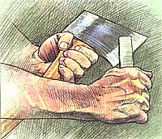
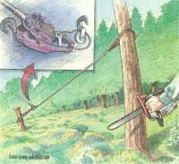
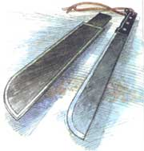

Grubbin' in the dirt and scruffin' out the woods.
Grubbin' and scruffin' were my grandfather's pet names for work in woods and field. This is lawn and garden work that falls somewhere between garden weedflicking and row-cultivating with slim-bladed onion hoes and claw-tined cultivators-and wholesale excavation with bulldozers, backhoes, and bucket loaders. It's hard work in the main. You have to grub out a hole when you need to plant a tree. Or scruff out a patch of serious brush for a new potato patch. And there would be both scruffin' and grubbin' to be done if you were setting a new fish pond into the side yard or doing the other chores described in "Home Landscaping Part I."
This is muscle-powered landscaping, really: moving earth and plant material that's too limited in scope and area to warrant heavy equipment, even if a backhoe could get into the back yard. It is work Hard work. Manual labor that puts a welcome ache into your muscles after a day or a week at the city desk jobs to which most of us are sentenced these days. And, for those who've left the 9 to 5 routine, it's a great way to keep muscles in tone and be sure the midriff doesn't expand too much.
But it also entails heavy lifting that can strain a back that is unprepared, bust a toe that's unprotected, and break or bend equipment that is not sufficently heavy duty or used inexpertly. It demands technique that enables body and tools to perform efficiently and safely.
Few real grubbing-quality tools are sold at retail garden supply outlets or country town hardware stores. You may find a few power tools at rental agencies, but the most appropriate hand took are made in small quantities and sold to the construction and nursery trades.
You and I can obtain them most easily by mail. A few sources are noted in the fol lowing text, and a list of mail-order tool suppliers and other sources is given at the end of the article.
For thinning and selectively clearing your woods or woodlot to make it more park than bramble patch, you'll want tools that are a little more refined than the big felling chain saw, tractor or draft horses, logging chains, and skidding tongs used to pull out lumber or cordwood logs.
My favorite tool for semi-heavy work is the "Our Best" brand cruising ax made by Snow & Nealley of Bangor, Maine. Other American ax makers produce similar models. Designed originally for timber cruisers who'd walk the woods estimating board-footage and notching the bark of trees to be harvested, it has a 1 3/4lb. singlebit head and 28" hickory handle. It can be sheathed and carried fairly handily and out of the way on your belt, but is capable enough to fell and limb trees a foot through at the stump, if need be. I use it to girdle large cordwood trees to be left to age on the stump and to thin out smaller trees that are too big for the small Swede or bow saw that I take with me.
To fell smaller trees and cut up small logs near house or barn, you can't beat an electric chain saw for economy and convenience. You can spend several hundred dollars for a name-brand electric, but you're better off investing that kind of money in a good gas-powered limbing saw (see below).
From mail-order discount houses and many hardware stores, $35 to $50 will get you a 2 to 3 hp. electric saw with a 12" to 16" bar and a chain that moves at 1,800 ft. per minute. It will get the work done if you avoid seasoned oak, keep the chain sharp with frequent licks on the job with a round file, and give it a good sharpening each evening with a Dremel-type power tool.
Electric saws come in several well-known chain saw brand names, but are nearly identical, and from the greyish cardboard packaging they come in, it looks to me as though they come from the same Taiwan factory that makes lower-priced woodworking equipment for name brands in that field.
Get the largest diameter (12 gauge minimum) electric cable you can find and plug it into a circuit that serves no other high-draw appliances. Use the conventional chain saw safety equipment and practices detailed in the instructions that come with any chain saw. These little units lack the chain speeds and savage power of their gas-powered brethren, but they can still kick back and chew you up good if you let the tip get stuck in the cut. The cutting bar will be thrown up and back with such force and speed that it will beat your reaction time. So keep the chain sharp, arms well out in front and slightly to the side of you, and learn to follow those printed instructions.
My own favorite lightweight, everyday gas-powered chain saws are in the Echo line. Weighing just a tad over 7 pounds, a third the weight of a conventional felling saw, these little machines come with 12" to 16" bars and 1.8 or 2.4 cubic inch engines. They have all the power you need for limbing, light felling, and small-diameter cordwood sectioning. At around $250, they aren't cheap but are professional quality and so nicely balanced and convenient to use they've become the standard for arborists who have to wield them as they climb around in trees.
For occasional use, you can't beat the many brands of small, reconditioned, consumer grade chain saws sold by Harbor Freight. These are units made in Taiwan or Korea that have been returned by buyers, usually because of hard starting due to a faulty carburetor. They come with a full factory warrantee after the factory has rebuilt or replaced the malfunctioning parts. A recent Harbor Freight catalog listed a Homelite CS 3314 with a 1.8 cu. in. engine, a 14" bar, electronic ignition, anti-kickback chain, and bar tip for $99.99. Order as soon as you get a catalog, as quantities are always limited for bargains like that.
Lacking a team of horses, chains, grappling hooks, and skidding tongs, you'll need something to man-handle (or woman-handle) logs in the woods. Easiest is to limb and section them into manageable lengths on the spot. To rotate logs for cutting you'll need a cant hook or peavy. A cant, or Hitch, is a tree trunk that's off the stump and limbed just enough to be maneuverable. A cant hook is a giant malleable steel fishhook in traditional duckbill or crowfoot pattern that's hinged about a foot up a 3 to 4 ft. long, 2 1/4" thick fire-hardened hickory handle, with the open end facing inwards toward the pole. You poke the hook into the log, lodge the pole end into the bark, and pull or push away from the hook to rotate the log.
A cant hook with a pointed spike on the business end is called a peavy. Put a removable, hinged T-bar opposite the hook on a peavy and you have a timberjack. You can snag a log with the cant hook, then lever it up off the ground on the "T" for sectioning, and save having to sharpen your chain every time you make ground contact, as you surely will if you try to section it lying on the forest floor.
Logging tools are available in the homesteaders' catalogs and, along with climbing rigs, rope, log-home building tools, saws, chains, and loggers' protective gear and clothing, from the woodsman's supplier Bailey's, which is the only mailorder source I know for proper loggers' red suspenders, snapbrim caps, and Bailey's own Wild-Ass(restricted) pants made from 14 3 / 4 oz. cotton denim. These have brass suspender buttons featuring a portrait of Henry the Jackass, a zipper fly, and raggedy, unhemmed "roll your own cuff" bottoms. They go for $24 for one pair, $22 each for 3, and $21 each per dozen. They are guaranteed to perk you up morally and spiritually.
You can buy a bush hook or ditch-bank tool, heavy steel knives with parrot-beak inwardly curved blades, or a woodsman's pal, an unwieldy machete-sized tool with one straight edge and the other containing that same parrot-beak reverse-angle curve. These all cost around $60 and do their best work on a pull stroke. I, however, do not like pulling sharp edges toward my delicate hide.
The best tool I've found for cutting tough weeds like mature goldenrod, grape vines, woody shrubs, and small trees is a standard machete, an 18" long, bulb-end- ed knife that evolved in the tropics for cutting through jungle and for an amazing variety of other work, from trimming grass to setting stone cobbles, to self-defense, to digging yams, to cutting down coconuts, then shucking and opening them.
If you you've been sedentary for a while, if you've spent a long winter without much exercise, start slowly. If you have any doubt or any questions about your health, see a physician before going grubbing.
Use appropriate tools-not your muscles-to do the really hard work. Avoid especially lifting with your back from a bent over position. Keep your back straight and lift with your legs when raising or lowering any weight much over ten pounds.
Use common sense safety precautions and safety equipment. Stout leather, steeltoed boots and hide gloves are needed for working rock and timber, heavy trousers and long-sleeved shirts for clearing brush. Glasses or goggles are important when working the woods and essential when chipping rock or using a chain saw. Wear a hard hat when working tall timber and wear ear protection if using a chain saw for long peri ods. One solution is an all-in-one helmet with attached ear cups and face shield.
You can find a great variety of machete-type brush knives, corn knives, and thin-steel bolo or standard blade machetes with plastic or wooden handles, each designed for a specific job in a particular region of the world. My favorite is the Heavy Duty Ontario Machete, made by Ontario Knife, the same company that made the K-Bar fighting knife I was issued from a Naval Store in the South Pacific in another era.
The Ontario Machete has a 1/6" thick blade of finely tempered, mild (easily sharpened) tool steel, a matte black Parkerized blade, and comes with a standard or saw toothed back. You can get one for $12 if you look around. A canvas sheath is a few bucks extra. A military surplus khaki fiberglass sheath won't cost $5, but may take some catalog searching. They are practically indestructible, and they have a spring-activated automatic edge sharpener at the mouth.
The handle is black Bakelite which is slipperier than the wood found on its Brazilian-made counterpart. But there is a good inch-long pommel at the bottom-rear of the handle to keep it from flying out of your hand, and the rear 2" of the blade is unsharpened in case your hand slides forward of the small hilt/hand-guard. The handle is attached with four steel cutler's rivets and there's a hole at the end to accept a leather thong. With the thong tied in a 10" to 12" loop and wrapped twice around the wrist, the machete isn't going far even if it does slip out of a sweatdrenched grip now and again.
When using the machete, scythe, kitchen knife, or wood-carving tool, I carry a Schrade HoneSteel. This is an 1/8" thick by 1" by 5" bar of metal/ceramic composite with one end sharpened, the other with a hole for a thong, and a leather sheath. Its extremely hard surfaces are milled to give a fine edge to any standard (non-stainless and thus easily-sharpened) tool steel implement. It will serve as a splitting wedge, a chisel or, struck against any steel, as a firestarter.
If stranded on a tropical island with the choice of any three things, my first and second choices would be a machete and a HoneSteel. I'd have to think about the third choice.
The usual machete stroke in light brush is back and forth, swiveling the wrist at the end of each stroke. The work goes at a steady pace if you keep the end of the blade well-sharpened and take no more of a bite than you can get through with minimal effort, letting the weight of the blade do most of the work. But it is easy to get tired or too confident, especially when you are working low to the ground and the vegetation you are cutting into is obscured. The blade can slide off a woody trunk that is stouter than anticipated or bounce off an unseen rock and, if you've let your grip get loose, it can slip out of your hand.
If a piece of vine or whippy sapling won't hold still, you may be tempted to rear backwards and take a great whack at it. Using excessive force is a mistake with any cutting tool. Let the tool do the work, sharpening it if necessary. Better yet, grab the offending whip, pull up or down till it is tight, then cut it with the blade edge close to the handle with a short up or down stroke. Aim away from your hand and arm. Often what works best is moving the blade sideways at the same time and making a lateral, slashing cut.
Even with a wrist thong, a machete can ricochet and cut your shin or ankle. Many people who have worked as cane cutters have large scars on their lower legs and a few of them are missing toes from getting too free and easy with their long knife or from trying to use force rather than technique to get the job done.
Bailey's sells a variety of protective devices including woodsman's chaps, which are chain saw resistant. The best safety device, however, is common sense. Stay alert and calm. Sweat in the eyes, buzzing, biting bugs, and heat, or icicles in the beard, frost on the goggles, and cold toes can reduce your attention or raise your ire. Either can cause a slip. So can hunger or thirst. On day-long trips, always carry plenty of water and a big lunch. For a short trek, take along a thermos of cold, sweetened rose-hip tea or bottles of iced, homemade ginger beer and a packet of trail mix containing plenty of instant energy: raisins, dates, or dried pineapple.
When it's in the garden being sweetened with lime, nourished with compost, stroked, cultivated, fluffed up, de-stoned, and treated like a pampered pet that's almost a member of the family, land is properly called "soil" or, almost reverentially, "the good earth." When it's several cubic yards of hard packed clay and rocks bound together with a snarled network of roots and snags, all overlaid with a tangle of vines, brambles, burrs, thorns, poison ivy, snakes and yellow jacket nests, it's plain "dirt." Pronounced "curt." Or "Gawddamdurt." Or worse.
If you have a lot of "duct" to move and want it done rapidly-say you want to get a pond in within the month-you should consider hiring the work out to a professional or renting a Bobcat or CleatTrak, a small, dozer-blade or back-hoe fitted ridingtype construction machine on wheels or tracks. Not as big or expensive as a full sized earth mover, these little gadgets can nonetheless move a prodigious amount of soil in an afternoon. You can haul them on a trailer behind your truck or have them delivered and picked up. They are easy enough to operate; you can pilot them yourself.
Any established sod-lawn, pasture or meadow-poses a dual barrier to your efforts. It is a thick, interwoven mat that's hard to penetrate and to separate into moveable chunks. And, unless you remove or kill it all, it will grow back stronger than before. See part I of this series on home landscaping (page 44) for details on using chemicals, mulching, using a sod-cutter, and tilling sod under.
Meadow sods are thicker and more robust than lawns and many of the plants they host have tap roots that go down several feet. You must cut out about 6" of a meadow sod to get the stems of deep rooted plants such as burdock. One answer is to have a neighboring farmer bring in his land plows and turn over a large field, then disc it weekly till established plants are gone. This could take most of the summer. Then, plant an annual cover crop such as winter wheat or annual rye and have that disked in as a green manure before planting your wildflower meadow or putting in the pool and bog gardens.
Whether doing it by hand or with conventional lawn and garden power tools, you have to take on each obstade with the tool most appropriate to the task. The first thing I do when attacking a new section of brush, woods, or meadow is to cut a broad path in, clear to the ground. Then I can work outward to both sides. If the ground is fairly even and the growth is light, there is nothing better than my CHP DR (restricted) Trimmer/Mower, a giant line-trimmer on wheels. It will take out anything up to pencil-sized brush, and will do a pretty good shredding job on it too. I suppose that a hand-held gas trimmer would do the job, but I can't handle the high frequency shriek of a fast revving little two-cycle engine that close to my ears.
For small saplings and brush-after ruining a half dozen cheap mall store pruning tools-I use an anvil-type lopping shear that costs more than a hundred bucks. I find that cross cut (scissors-type) shears get bent too easily. Indeed, the soft steel cutting blade of the anvil-type can twist if given too much to bite off. So I protect my investment by carrying a little Swede saw or bow saw that will cut off larger saplings.
Slim wood-handled shovels and hoes used in light garden work won't hold up to any sort of heavy grubbin; especially if they've been left out in the weather or haven't been linseed-oiled at season's end.
To cut sod in strips to be rolled up or to remove it in small shovelfulls, a square ended cutting spade is best. I prefer the wood "D"-handled varieties imported from England just because they are pretty and at about $35 aren't exorbitantly priced. Mine are from Spear & Jackson and are half-strapped: the steel strap that holds the shovel on comes half-way up the wooden handle. It will stand up to several times the load of a long plain wood handle.
More effective still are contractors' or nursery shovels with half or full steel-strapped handles of wood, fiberglass, or all steel. The fiberglass handled versions will take any punishment a human can dish out, and come with lifetime guarantees. As well they should, with some going for $75 and up. The best selection comes from the A. M. Leonard catalog; their own brand of nursery spades in full-strap and all steel are reasonably priced, especially since they are industrial strength.
Leonard also sells a much needed tool: trenching shovels. In 3" and 5" widths, these 11" long shovels with good penetrating pointed ends, "V"-shaped spoons, and 4' long fiberglass handles cost under $30 and are perfect for digging drainage trenches, for burying water-drain and supply trenches, or for electrical conduits. In rain or sprinkler moistened soil they actually let a steady worker do the work more quickly, more cheaply, and more quietly than a rented mechanical trenching machine. Nor will they accidentally sever underground electrical or phone lines.
To make trenching even faster, I like to run a tiller over the sod to be removed. The little hand-held Mantis tiller will dig up a strip of sod wide enough for the trenching shovels, getting soil penetration and extraction done in half the time.
For cutting heavy roots and hard soil you have a choice of implements that wasn't available until fairly recently. Several firms are distributing heavy-duty hand excavating tools with black iron or cast steel heads and hickory or ash handles. The castings have that rough, made in Taiwan look, but they are rugged and priced reasonably.
The traditional pickax with a pair of sharp points is of little use in most grubbin' I've tried them on. The points disappear into anything but rock hard sod. I prefer the landscaping grade pick-mattocks or pulaskis with a pair of flat-edged blades being sold for less than $40 by the homesteading catalogs. One of the 3" to 6" wide blades is parallel to the handle and the other is perpendicular to it. One blade will cut the root or dislodge the stone that the other won't. You can get fire fighters' pulaskis made from tempered steel by the ax manufactur ers. These are great for building or for timber fires but are too good to be used to grub in soil full of stones that will chip the steel.
You can also buy a variety of sizes in Italian grape hoes or grub hoes. With a single flat blade with a large open eye cast into the top for the handle, these are patterned after the all wood hoes used to work farmland since mankind first took up a settled agrarian existence. They are perfect for cultivating hard, rocky soil. But despite their apt name, I find grub hoes too broad for grubbing and angled wrong for cutting roots. The one that I had years ago was crudely cast and had an eye that was not shaped to hold the handle. No matter how I whittled, wedged, and pounded, it was always wobbly. I doubt that today's versions are so badly made.
The one wide-bladed tool that I do like for the scruffin' end of the job is a McLeod fire tool. Used by U.S. Forest Service fire jumpers and forest fire battlers around the world, this is a reasonably lightweight tool with a flat blade about 10" wide and 7" high. One edge is a hoe, the other is cut into wide rake teeth. A socket is welded or riveted to the middle of the tool and a stout 4' wood or fiberglass handle is bolted to that. It is handy to rake up soil or underbrush that is too tough or large for any conventional garden rake. Expensive at $55, but uniquely well designed, it is available from Bailey's.
Once you've taken down a large tree, you may want to remove its stump or roots. My way is to grub out soil all around the roots then use a pair of 4' long steel pry bars from any building supply store to wiggle it around, and finally, to use a comealong to pull it out Then it has to be hauled out back to a brush pile. You can't chain saw it up, as the mots are full of stones that would eat a box of chains. It takes me all summer sometimes to do one. It makes more sense to leave it be and grind it down.
The lower bole, or bottom of the tree and top of the roots, can be removed from view most readily with a rented stump grinder, an awesome thing with revolving teeth and a big engine that hovers over the stump and slowly eats it, spitting out the chips. But you still have the root structure in the ground. This will rot in time if it isn't the sort of tree that sprouts from its stump. You can burn it after it has dried for a year. There are also natural enzymes and chemical concoctions that can be poured onto it to dissolve it in time.
BOOK SOURCES
Chatto, Beth. The Damp Garden (Sagapress, Inc., 1982).
Cresey, Rosaline. Edible Landscaping ( Sierra Club, 1982).
Daniels, Stevie. The Wild LawnHandbook (Macmillan , 1995).
Earnst, Ruth Shaw. The Naturalist's Garden (Pequot Press, 1993).
Gilmore, Robert. TheWoodland Garden (Taylor, 1996).
Mollison, Bill. Introduction to Permaculture (Tagari, 1995).
Nature Company/John Karel Boring et al. NaturalGardening (Time/Life/Weldon Owen, 1995).
Elias. Edible WildPlants (Sterling, 1990). Reich, Lee. Uncommon FruitsWorthy of Attention (AddisonWesley, 1995).
Roth, Sally. Natural Landscaping St . Martin's, 1997).
Homesteaders' Catalogs Cumberland General Store 1-806-334-4640
Lehman's Non-Electric "Good Neighbor" Heritage Catalog 330857-5757
General Tool Catalogs Harbor Freight Tools 1-800-423-2567
Northern 1-800-533-5545
Garden Tool Catalogs A.M. Leonard 1-800-543-8955
Loggers' Supply Catalogs Bailey's 1-800-322-4539
Seed Catalogs Peaceful Valley Farm Supply 916-272-4769
Pinetree Garden Seeds 207-926-3400
Magazine WaterGardening 317-769-3278
Small trees and large shrubs can be pulled up whole with a gadget called a Root Jack. One version is available from Peaceful Valley for a pretty hefty $85. This consists of a steel or hardwood post with an "I:'shaped steel foot mounted on the bottom. On the other side of the post, opposite the foot, is a mirror image pair of toothed pawls mounted on horizontal pins pointing back in the direction of the foot. They rotate up and down in the vertical plane on the front of the tool. You set the stem of the unfortunate plant between the pawls and haul back on the handle. As the handle moves back and up, the pawls pivot down, tighten and bite into the stem. As you pull, the device hinges up and back on the rear facing foot, providing enough leverage for you to extract plant, root, and all, like a dentist pulling out a sore tooth.
Medieval herbalists needed to collect the mandrake plant whole, as its root contains a natural anesthetic that was the most powerful sedative and pain-killer known before ether was discovered in the 19th century. It often had a root that was bifurcated in the shape of human legs and was reputed to holler fatal recriminations upon being dug up. So the alchemists used goats or dogs to do the pulling. If you find your manzanita or junipers muttering to you as they come out, you can try harnessing the household milch goat or the hounds to the Root Jack.
If your homestead beasts are as spoiled rotten as mine, it would be more effective, I'd bet, to attach a come-along. You will surely want to use a come-along when the job is too much for a Root-Jack. They can extract roots of large trees, put a strain on leaning tree trunks so you can fell them in the direction you want, move rocks if properly harnessed, and pull out your Jeep when it gets stuck in the mud.
Come-alongs come (along) in two versions. One is a conventional block and tackle, a strong line wrapped several times around a pair of compound pulleys with several reels in each. Each pulley has an eye on it. Tie one eye to a stake and the other to the top of the Root Jack or anything else needing a strong hand laid on. Pull the free end of the line and the multiple wraps will multiply your effort several times. Out comes the root. Some of these are very lightweight and are made to be portable in a hunter's pocket for hoisting deer on a tree limb for dressing, or for getting camp food high enough off the ground that bears can't get it. Others are large enough to hoist an automobile.
The other type comes equipped with a steel cable and a ratchet mechanism and handle. It is a small winch, really. The ratchet multiplies the power of your effort, moving the cable an inch or more for each yard you crank the handle. They come in half ton, one ton, and larger hand crank models. There's also a version powered by a small gas engine.
Come-alongs have an advantage over fixed hand or electric winches that attach to Jeeps or 4WD trucks. Both ends are loose, so they can be used to pull anything to which you can attach the come-from end. And you can pull anywhere you want, so long as there's an anchor for the come-to end.
There are always tons of grubbed-out soil and rocks, scruffed-out logs, and shrubbery to be hauled. A truck is nice if you can get it in. And get it out, loaded. Those famous metal-trimmed stained plywood garden carts with spoke wheels are fine for light loads. Don't try filling one with rocks as I did once, and take it bumping down a step. I collapsed a wheel.
A contractor's wheelbarrow is good for short hauls. Its main advantage is ease of dumping; it was designed to haul concrete, sand, or other material that will pour out when it is stopped suddenly and just let tip. A two-wheeled barrow is easier to balance than a one-wheeler. They're available for $150 or so from the tool suppliers.
I have a little plastic garden cart I got on sale for $35 and it is fine for small loads, though the little 8" hard plastic wheels are too tiny to traverse anything but smooth lawn. If you have the funds, Country Home Products sells an engine-powered stake bed cart that I'd give anything for. A garden tractor or big tiller with a cart will also do fine. Best of all would be a four-wheel ATV with a cart attached to the front or back I tend to burst into song when I speak of ATVs, because there has virtually never been such a combination of utter practicality and toothy grins in one machine.
Sometimes the simple tools do the most work. Remember to plan well, use the right tools, and work at a steady but not strenuous pace. And don't strain your grubber. Or your scruffer either, OK?
|
 ILLUSTRATIONS BY STEVE KATAGIRI |
 |
 |